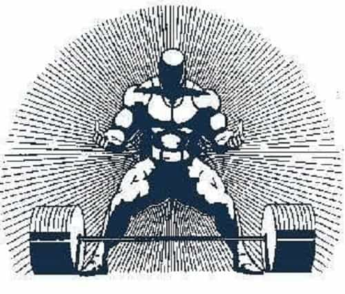

Bruno is a young man who used to dismiss red pillers as alarmists. Then he spent a semester in a college campus and became one himself. Now he educates himself through the internet and a library card.


In ancient Greek myth, Hercules was said to have reached what’s now the Strait of Gibraltar, which connects the Mediterranean Sea with the Atlantic Ocean. This was he furthest West he ever ventured, as well as the edge of the known world. The two edges of the Strait of Gibraltar, Jebel Musa (African coast side) and the Rock of Gibraltar (Europe side), were thus named ”The Pillars of Hercules”.
According to the stories, on the pillars were engraved the words ”Non Plus Ultra”, meaning Nothing Further Beyond in Latin. These words were meant as a warning not to venture any further.
On the year 1516, Spain’s King, Charles V, overturned this warning and made the words ”Plus Ultra” (further beyond) into the national motto. This reversal came about as a result of Christopher Columbus sailing past the pillars into the new world on 1492 and the reclaiming of Spain from the Arabs.
Having effectively ventured past the end of the world, Spain went beyond the previous limits, ushering in a new prosperous era. This slogan remained popular in Spain and throughout the world after Charles’s death, having been used in the names of sports teams, brigades, and even engraved in Donald Trump’s Florida mansion.

Take Plus Ultra and apply it to everything you’re working towards. On the gym, dare to go for just a bit more weight than you think you can handle. Go for that extra rep on your pull-ups or push-ups when it feels like your arms will bust if you keep going. Your body will flood you with pain to protect you, but you must go that bit further anyways. More often than not, that one extra rep won’t break you, but rather, make you stronger.
On your work, put extra effort in even when you want to stop. If you’ve decided to work 20 minutes and then take a break, make that 21 minutes. Once you’ve persevered past what you thought you could handle, you’ll often find yourself going even further.
The limitations you thought you had seem trivial once they’ve been smashed over and over again. Work harder, bolder and bigger than you had originally planned to. Dare to take risks and strive for excellence.
Of course, there’s a limit to what you can achieve by just willing yourself into action. Willpower is ultimately finite, and relying on it alone won’t solve your problems. However, nearly every time, you won’t have gone as far as you actually could. We often underestimate what we’re actually capable of.
If you don’t try to past your limits, you’ll never find out what those limits actually are. Challenge yourself to go further every time you think you could do more. You’ll find your limits stretching with every bit of extra effort you put in.

Non Plus Ultra this bull
There are times to heed the warning on the Pillars of Hercules. There are things, both in the outside world and within yourself that must not be challenged. These are boundaries to be respected, lines to not cross.
As an individual, this means establishing and defending boundaries for what you’ll accept from others: being uncompromising with your standards for long term relationships, refusing to go against your principles when urged to, and not taking shit from bosses, friends, or co-workers. Your personal boundaries must be as the ocean nobody dared to sail past.
And as for the larger world, these are absolute truths and realities, such as inherent biological differences between the sexes and the need for order in a civilized society. No good comes from opposing such facts.
The vision behind Plus Ultra doesn’t apply to just the individual man, it was also meant as a call for progress for the whole country and Western civilization as a whole. A message for new generations to go further than their predecessors did. We should be conquering new frontiers in colonizing Mars, not trying to redefine gender.

Let’s aim for this instead, ok?
Let Plus Ultra be your battle cry as you take on life. Man’s drive and potential is worth nothing if not used. Go further, as those before us did, so that those who follow can go beyond even that.
Read More: In Defence Of The London Ultra-Orthodox Jews Who Banned Women From Driving